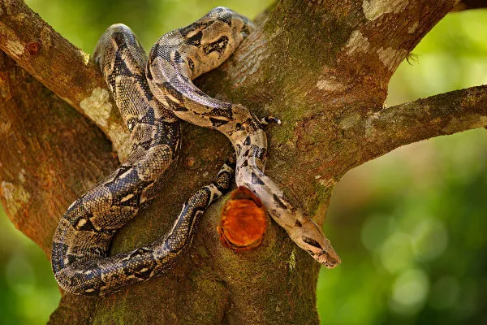
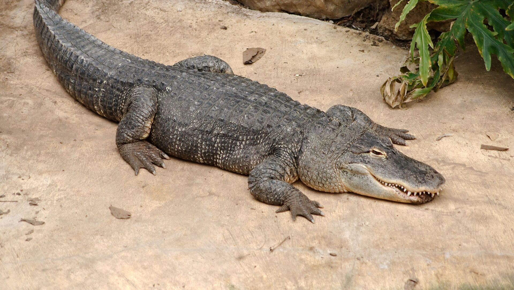
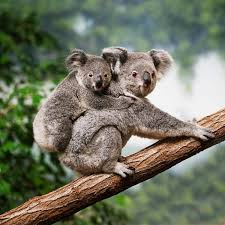
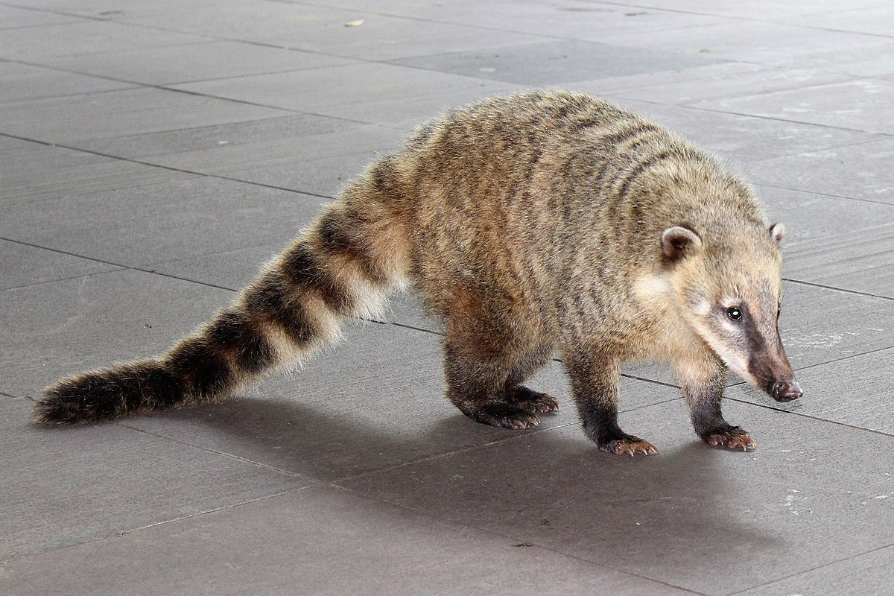
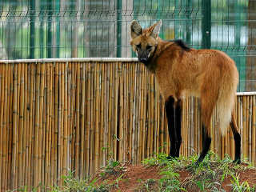
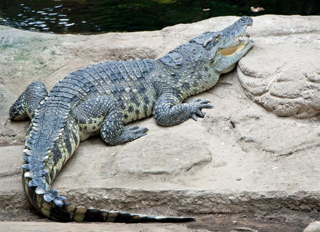
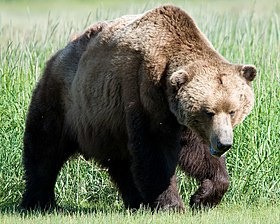

As girafas são os únicos membros de seu gênero e, juntas com os ocapis, formam a
família Giraffidae. Atualmente estão listadas quatro espécies de girafa existentes e nove já extintas,
diferenciadas
também pela distribuição geográfica e pelo padrão das manchas.
Onça Pintada (Panthera onca)
A onça-pintada ou jaguar, também conhecida como onça-preta, é uma espécie de
mamífero carnívoro da família dos felídeos encontrada nas Américas. É o terceiro maior felino do mundo, após o
tigre e o leão, e o maior do continente americano.
Elefante (Loxodonta)
Os elefantes são animais herbívoros, alimentando-se de ervas, gramíneas,
frutas e
folhas de árvores. Dado o seu tamanho, um elefante adulto pode ingerir entre 70 a 150 kg de alimentos por dia.
As
fêmeas vivem em manadas de 10 a 15 animais, lideradas por uma matriarca, compostas por várias reprodutoras e
crias
de variadas idades. O período de gestação das fêmeas é longo (20 a 22 meses), assim como o desenvolvimento do
animal que leva anos a atingir a idade adulta. Os filhotes podem nascer com 90 kg. Os machos adolescentes
tendem a
viver em pequenos grupos e os machos adultos isolados, encontrando-se com as fêmeas apenas no período
reprodutivo.
Leão (Panthera leo)
O Leão é uma espécie de mamífero carnívoro do gênero Panthera e da família
Felidae. A espécie é atualmente encontrada na África subsaariana e na Ásia, com uma única população
remanescente
em perigo, no Parque Nacional da Floresta de Gir, Gujarat, Índia. Foi extinto na África do Norte e no Sudoeste
Asiático em tempos históricos, e até o Pleistoceno Superior, há cerca de 10 000 anos, era o mais difundido
grande
mamífero terrestre depois dos humanos, sendo encontrado na maior parte da África, em muito da Eurásia, da
Europa
Ocidental à Índia, e na América, do Yukon ao México. É uma dos quatro grandes felinos, com alguns machos
excedendo
250 quilogramas em peso, sendo o segundo maior felino recente depois do tigre.
Hipopótamo (Hippopotamus amphibius)
O hipopótamo-comum ou hipopótamo-do-nilo é um mamífero herbívoro de grande
porte
da África subsariana e uma das duas únicas espécies não extintas da família Hippopotamidae, sendo a outra o
hipopótamo-pigmeu. O seu nome provém do grego antigo, significando "cavalo do rio". Apesar das suas
semelhanças
físicas com os porcos e outros ungulados artiodáctilos (sendo por isso designado de animal porcino), os seus
parentes vivos mais próximos são os cetáceos (baleias, os golfinhos, etc.) dos quais divergiram há cerca de 55
milhões de anos.
Tamanduá-bandeira (Myrmecophaga tridactyla)
O tamanduá-bandeira , também chamado bandeira, bandurra, iurumi, jurumi,
jurumim,
tamanduá-açu, tamanduá-cavalo, papa-formigas-gigante e urso-formigueiro-gigante, é uma espécie de mamífero
xenartro da família dos mirmecofagídeos, encontrado na América Central e na América do Sul. É a maior das
quatro
espécies de tamanduás e, junto com as preguiças, está incluído na ordem Pilosa.
Jibóia (Boidae)
As Jiboias são animais que possuem um grande corpo comprido e cilíndrico. O
seu
tamanho é uma característica marcante, sendo observados indivíduos de até quatro metros de comprimento. As
fêmeas,
quando comparadas aos machos, destacam-se por apresentarem um tamanho maior. A coloração das jiboias é variada
e,
dependendo da subespécie, podemos observar diferentes padrões. Alguns indivíduos, por exemplo, apresentam a
cor
cinza predominante; outros, a coloração marrom; e existem ainda aqueles que possuem coloração bem escura,
quase no
tom de preto. As escamas das jiboias são pequenas e irregulares.

Jacaré (Alligatoridae)
Os jacarés se diferenciam dos crocodilos por possuírem uma cabeça mais curta e
mais larga, com focinhos mais avantajados. Onde Jacarés ingerem carne e peixe.
O menor jacaré é o jacaré-anão, cujo comprimento varia entre 1,2 e 1,4 metros e pesa de 6 a 7 quilogramas. O
aligátor-americano tem um tamanho médio de 3 a 4,6 metros, chegando até 5,3 metros e 400 quilogramas. O
tamanho
médio do jacaré-açu é de 2,8 a 4,2 metros, podendo alcançar os 6 metros e mais de 400 quilogramas.

Coala (Phascolarctos cinereus)
O coala é um mamífero marsupial herbívoro arbóreo nativo da Austrália. É o
único
representante existente da família Phascolarctidae e seus parentes vivos mais próximos são os vombates, que
são
membros da família Vombatidae.

Bicho-Pregiça (Folivora)
Folivora é uma subordem de mamíferos, da ordem Pilosa, cujas espécies são
conhecidas popularmente por preguiça, bicho-preguiça, aí, aígue e cabeluda. São mamíferos arborícolas e estão
divididos em dois gêneros, Bradypus e Choloepus. Representam a superordem Xenarthra, juntamente com os
tamanduás e
tatus.
Todos os dedos têm garras longas pelas quais a preguiça se pendura aos galhos das árvores, com o dorso para
baixo.
Seu nome advém do metabolismo muito lento do seu organismo, responsável pelos seus movimentos extremamente
lentos.
É um animal de pelos longos, que vive na copa das árvores de florestas tropicais desde a América Central até o
norte da Argentina. Na Mata Atlântica, o animal se alimenta dos frutos da Cecropia (a embaúba, conhecida, por
isto, como árvore-da-preguiça).
Quati (Nasua)
O Quati é um mamífero da ordem Carnivora, da família Procyonidae e do gênero
Nasua. O grupo está distribuído desde o Arizona até o norte da Argentina, possuindo três espécies: Nasua
nasua,
Nasua narica e Nasua nelsoni. Este animal também é conhecido por seu nome popular "Tamanduá Palito". Vive em
bandos de 4 a 20 indivíduos, é praticamente onívoro e se adapta bem ao cativeiro. São animais diurnos, mas ás
vezes o macho faz atividades noturnas.

Lobo-Guará (Chrysocyon brachyurus)
É o maior canídeo da América do Sul, podendo atingir entre 20 e 30 quilos de
peso
e até 90 centímetros na altura da cernelha. Suas pernas longas e finas e a densa pelagem avermelhada lhe
conferem
uma aparência inconfundível. O lobo-guará é adaptado aos ambientes abertos das savanas sul-americanas, sendo
um
animal crepuscular e onívoro, com importante papel na dispersão de sementes de frutos do cerrado,
principalmente a
lobeira. Solitário, os territórios são divididos entre um casal, que se encontra no período do estro da fêmea.
Esses territórios são bastante amplos, podendo ter uma área de até 123 km². A comunicação se dá principalmente
através de marcação de cheiro, mas também ocorrem vocalizações semelhantes a latidos. A gestação dura até 65
dias,
com os recém-nascidos de cor preta pesando entre 340 e 430 gramas.

Crocodilo (Crocodylidae)
Os crocodilos ou Crocodylidae são uma família de répteis com quatorze
espécies. O
termo "crocodilo" também é usado às vezes num sentido mais amplo para se referir à ordem Crocodylia
(crocodilianos). Os crocodilos verdadeiros (família Crocodylidae), os gaviais (família Gavialidae) e os
caimões,
os aligatores e jacarés (família Alligatoridae).
Os crocodilos vivem nas Américas, África, Ásia e Austrália. A maioria dos crocodilos vivem nas margens de
rios,
enquanto os da Austrália e ilhas do Pacífico também frequentam o mar. Os crocodilos não possuem predadores
naturais, por se tratar de um animal de topo na cadeia alimentar.
O maior réptil hoje na face da terra é o crocodilo-de-água-salgada encontrado no norte da Austrália e ilhas do
sudeste da Ásia.

Urso-Pardo (Ursus arctos)
O urso-pardo é um mamífero carnívoro da família dos ursídeos. É o urso de mais
ampla distribuição geográfica dentre todos os membros vivos de sua família. É um dos maiores carnívoros
terrestres
da atualidade, rivalizado em tamanho corporal apenas com seu parente próximo, o urso polar, que é muito menos
variável em tamanho e maior devido a isso. Existem varias subespécies reconhecidas, muitas das quais são bem
conhecidas em sua área de ocorrência.
O urso pardo ocorre em partes da Rússia, Ásia central, China, Canadá, Estados Unidos (principalmente o
Alasca),
Escandinávia e região dos Cárpatos (especialmente a Romênia), Anatólia e Cáucaso. O urso pardo é reconhecido
como
o animal nacional e estadual de vários países europeus.
